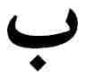

The Word of God
The ministry of Bahá'u'lláh is characterized by two features, both unparalleled in the history of mankind: first, the suffering and persecutions which were inflicted upon Him, and second, the vastness of His Revelation. The contrast of light and darkness, of majesty and bondage, of glory and abasement is to be seen throughout His ministry. The history of His life can be described as a book whose pages are darkened by the cruelties inflicted upon Him at the hands of a perverse generation, but whose letters shine with the splendours of God's Revelation, shedding their lustre upon a world shrouded in ignorance and prejudice.
The spiritual energies latent within this mighty Revelation were released by Bahá'u'lláh during the forty years of His ministry. They were destined to revitalize the entire human race and create a divine civilization which has been heralded by previous Messengers as the 'advent of the Kingdom of God on earth'. The vehicle of these energies is the Word of God which He revealed for this age. This Word was not the fruit of learning and knowledge, for Bahá'u'lláh's education was an elementary one, but the emanation of the Holy Spirit.
The Word of God is Independent of Acquired Knowledge
In Persia in the nineteenth century most people were illiterate, under the domination of the clergy whom they blindly obeyed. There were two educated classes, divines and government officials, plus a small number of others. Only the religious leaders and divines, however, could be called learned. They used
The second class included government officials, clerks and some merchants, who received a certain elementary education in their childhood. This consisted of reading, writing, calligraphy, the study of the Qur'án and the works of some famous Persian poets. All this was usually accomplished within the span of a few years, after which many of them would marry, as was customary, in their late teens.
It was to this class that Bahá'u'lláh belonged. His father was a senior dignitary at the court of the Sháh and famous as a calligrapher--an art which carried with it great prestige in royal circles. Bahá'u'lláh as a child received a simple education for a brief period of time. Like His father, He excelled in calligraphy. Some specimens of His exquisite handwriting are kept in the International Bahá'í Archives on Mount Carmel.
When Bahá'u'lláh was about nineteen years old He married a lady of noble birth, Ásíyih Khánum. She bore Him seven children of whom only three survived--'Abdu'l-Bahá, the Greatest Holy Leaf, and Mírzá Mihdí, the Purest Branch.
* Muslim clergyman.
Although in this society it was the government officials who wielded authority, nevertheless, the all-powerful clergy looked down upon such men as inferior beings, unworthy to enter with them into the realms of knowledge and learning. Yet Bahá'u'lláh, on several occasions, expounded with simplicity and eloquence abstruse and mysterious traditions of Islám in the presence of divines, who were astonished at the depth of His knowledge and the profundity of His utterance.
The revelation of the Word of God has never been dependent on acquired knowledge. The Bearers of the Message of God in most cases were devoid of learning. Moses and Christ were not learned men. Muhammad was not educated, but when Divine Revelation came to Him, He uttered the words of God. Sometimes His utterances would be recorded on the spot by one of His disciples and sometimes the words would be memorized and recorded later. The Báb and Bahá'u'lláh had an elementary education, yet their knowledge, which was derived from God, was innate and encompassed the whole of mankind.
In one of His Tablets known as the Lawh-i-Hikmat (Tablet of Wisdom), which contains some of His noblest counsels and
Lawh-i-Hikmat
In another Tablet Bahá'u'lláh revealed the source of His knowledge and the divine origin of His Mission in these words:
O King! I was but a man like others, asleep upon My couch, when lo, the breezes of the All-Glorious were wafted over Me, and taught Me the knowledge of all that hath been. This thing is not from Me, but from One Who is Almighty and All-Knowing. . . . This is but a leaf which the winds of the will of thy Lord, the Almighty, the All-Praised, have stirred.1The Nature of Bahá'u'lláh's Revelation
The mystical intercourse between God, as the Father, and His chosen Mouthpiece, the Prophet, as the Mother, gives birth to Divine Revelation which in turn brings forth the Word of God. It is not possible for man to understand the nature of this sacred relationship, a relationship through which God is linked with His Manifestation. Our limited knowledge in this field is derived from the words of Bahá'u'lláh, and words are inadequate tools for the expression of a spiritual reality.
The revealed Word has an inner spirit and an outer form. The innermost spirit is limitless in its potentialities; it belongs to the world of the uncreated and is generated by the Holy Spirit of God. The outer form of the Word of God acts as a channel through which the stream of God's Holy Spirit flows. It has its limitations inasmuch as it pertains to the world of man. Like a mother who impresses on her child certain traits of her own character, the Bearer of the Message of God influences
1. Bahá'u'lláh, The Proclamation of Bahá'u'lláh, p. 57.
Although Bahá'u'lláh did not attend any of the schools for the divines or learned classes, yet men of letters have testified that His Writings both in Arabic and Persian, viewed solely from the literary point of view, are unsurpassed in their beauty, richness and eloquence. Although unfamiliar with the Arabic language, its vast vocabulary and the complexities of its grammar, which normally took the divines a lifetime to master, Bahá'u'lláh has so enriched Arabic literature with His Writings that He has created, as Muhammad did in His day, a style which has inspired Bahá'í scholars and writers ever since. The same is true of His Writings in Persian.
Not only will the reader be enchanted and uplifted by the beauty of His style, the eloquence of His words, the flow and lucidity of His composition and the profundity of His utterances, but he will also find that Bahá'u'lláh has originated a new terminology which contributes, in large measure, to a fuller and deeper understanding of the verities of the world of the spirit.
The Writings of Bahá'u'lláh, which are usually known as Tablets, are revealed in either Persian or Arabic and often in both. There are many Tablets which are partly in Persian and partly in Arabic. In one of His Tablets He has referred to Arabic as the 'language of eloquence' and to Persian as the 'language of light' and the 'sweet language'. His Arabic Writings are filled with power and authority and His utterances in this language appear in their greatest majesty and eloquence.
In order to write, any writer must rely on his knowledge and learning. He will have to meditate on the subject and undertake research. After much work he may produce a book in which always there will be ample room for improvement, and not infrequently he will feel it necessary to rewrite the entire book. This is not so in the case of the Manifestations of God Who do not rely on Their own human accomplishments.
When revelation came to Bahá'u'lláh, the Word of God poured forth from His lips and was recorded by His amanuensis or, occasionally, was written by Himself. His words flowed with such rapidity that, as attested by Himself in one of His Tablets, His amanuensis was often incapable of recording them.
The Qur'án, the Holy Book of Islám, consists of approximately six thousand three hundred verses. It was revealed by Muhammad during the course of twenty-three years. In this Dispensation, however, the outpouring of Divine Revelation has been vouchsafed to humanity in such profusion that, within the span of one hour, the equivalent of one thousand verses was revealed by Bahá'u'lláh. 'So great is the grace vouchsafed in this day', Bahá'u'lláh testifies, 'that in a single day and night, were an amanuensis capable of accomplishing it to be found, the equivalent of the Persian Bayán* would be sent down from the heaven of Divine holiness.' 2
As if the gates of heaven were flung open, the Word of God for this age enveloped humanity. During the forty years of Bahá'u'lláh's ministry, this earth was immersed in an ocean of Revelation, which released enormous spiritual energies whose potentialities no one can as yet apprehend. The Writings of Bahá'u'lláh, which constitute the Holy Scriptures for the whole of mankind, are so vast in their range that, as attested by Him-
* The Mother Book of the Bábí Dispensation, revealed by the Báb.
2. Shoghi Effendi, God Passes By, p. 171.
The person who for most of Bahá'u'lláh's ministry acted as His amanuensis was Mírzá Áqá Ján of Káshán, entitled Khádimu'lláh (Servant of God). Apart from being His amanuensis, Mírzá Áqá Ján also used to wait on Bahá'u'lláh and was often addressed by Him as 'Abd-i-Hádir (Servant in Attendance). He did not belong to the learned class. He had an elementary education and in his youth used to make soap and sell it for a living in Káshán. He came to 'Iráq soon after the arrival of Bahá'u'lláh in that country and his first meeting with Him took place in the house of a friend in Karbilá. It was there that he sensed a great spiritual power emanating from Bahá'u'lláh, a power which transformed his whole being and filled him with a consuming love for his Beloved. He was the first one to whom Bahá'u'lláh gave an intimation of His station, later honouring him with the responsibility of serving as His amanuensis.
Notwithstanding this bounty, Mírzá Áqá Ján, who for almost forty years was so intimately associated with Bahá'u'lláh and His Revelation, ultimately betrayed his Lord. After the ascension of Bahá'u'lláh he rebelled against 'Abdu'l-Bahá, the Centre of His Covenant, and joined hands with the arch-breaker of that Covenant. During the ministry of Bahá'u'lláh, however, Mírzá Áqá Ján assiduously served Him in his capacity as amanuensis and would make himself available to Bahá'u'lláh at any time of the day or night.
Whenever revelation came to Bahá'u'lláh, whether in His humble dwelling in Baghdád, or in the bitter cold of Adrianople, whether sailing by sea or travelling by land, whether in the prison cell of 'Akká or in His spacious Mansion at Bahjí, Mírzá Áqá Ján was invariably ready with quantities of paper, some ink-pots and a bundle of reed pens to record the utterances of Bahá'u'lláh as they streamed from His lips. Owing to the rapidity with which His words were revealed, the first recordings were not easily legible and had to be transcribed
Apart from one seal which bore His name, Husayn-'Alí, Bahá'u'lláh had altogether ten seals which were made at different times during His ministry. Only one of them bears the inscription 'Bahá'u'lláh'. A few contain passages which describe Him as a Prisoner and the One Whom the world has wronged. Others declare in majestic language and unmistakable terms His incomparable authority, His transcendent majesty and His glorious station as the Supreme Manifestation of God and His Vicegerent on this earth.
Among those who took part in the transcription of the Tablets was 'Abdu'l-Bahá, Who was occupied with this work from His early teens in Baghdád to the end of Bahá'u'lláh's ministry. Many of the original Tablets of Bahá'u'lláh are in the handwriting of 'Abdu'l-Bahá.†
Once the Tablet was written, several copies had to be made for the purpose of disseminating them among the believers. There were times in Bahá'u'lláh's life when the outpourings of Divine Revelation were so profuse that even a number of scribes, working day and night to transcribe His Tablets, were still unable to cope with them all. Some have left to posterity volumes of compilations in their own handwritings.
Notable among these was Mullá Zaynu'l-'Ábidín, surnamed Zaynu'l-Muqarrabín (the ornament of them that are nigh unto God) by Bahá'u'lláh. Before his conversion to the Bábí Faith, he was a learned mujtahid (doctor of Islámic law) and an outstanding figure in his native town of Najaf-Ábád. He became an ardent Bábí about the time of the imprisonment of Bahá'u'lláh in the Síyáh-Chál, and was bitterly opposed and persecuted by those very people who were once his admirers and followers. Later he travelled to Baghdád and eventually attained the presence of Bahá'u'lláh after His return from the mountains of Kurdistán. As a result of this meeting and of receiving some
* See plate facing p. 78.
† See frontispiece.
He was meticulous in transcribing the Writings of Bahá'u'lláh and took great pains to ensure that they were correctly recorded. Any Tablet in the handwriting of Zaynu'l-Muqarrabín is considered accurate. He has left to posterity, in his exquisite hand, many volumes comprising most of Bahá'u'lláh's important Tablets; today Bahá'í publications in Persian and Arabic are authenticated by comparison with these.
Another work associated with his inquisitive and brilliant mind is the book Questions and Answers by Bahá'u'lláh. Being a mujtahid and thus highly qualified in the application of Islámic laws, Zaynu'l-Muqarrabín received permission from Bahá'u'lláh to ask any questions he might have regarding the application of the laws revealed in the Kitáb-i-Aqdas. The answers given by Bahá'u'lláh provide further elucidation and expansion of His laws and this book is regarded as a supplement to the Kitáb-i-Aqdas.
The story, however brief, of the life of Zaynu'l-Muqarrabín will not be complete without referring to his great sense of humour which always cheered the believers. At times he used to make amusing remarks in the presence of Bahá'u'lláh, some of which are even recorded in certain narratives.
Another person of outstanding qualities who performed distinguished services in the field of transcription was the celebrated calligrapher Mírzá Husayn, surnamed Mishkín-Qalam, a native of Isfahán who, like Zaynu'l-Muqarrabín, was endowed with the gift of humour.
Before embracing the Faith, Mishkín-Qalam was closely associated with the court of Násiri'd-Dín Sháh in Tihrán where he held a position of some eminence. Once the Sháh allowed him to pay a short visit to his home in Isfahán; it was on this
The Kitáb-i-Aqdas, Questions And Answers
Mishkín-Qalam was an exile in Cyprus for about nine years, but the influence of Bahá'u'lláh had so permeated his soul that, notwithstanding his long association with the perfidious Yahyá, he remained steadfast in the Cause, indomitable in faith, and unswervingly loyal to his Lord.
As soon as freedom came to him in 1294 A.H. (circa A.D. 1878), he left for 'Akká; there he attained the presence of Bahá'u'lláh Who permitted him to reside in that city. He was a companion, a devoted servant and one of the Apostles† of Bahá'u'lláh, an artist of remarkable talent, unsurpassed as a calligrapher, and a genius in the creation of exquisite designs from letters and words. Among his works of art are some which have been made merely by the impression of his finger-nails on a sheet of blank paper.
Mishkín-Qalam spent many years of his life transcribing the Tablets of Bahá'u'lláh and 'Abdu'l-Bahá. There are several
* A Bábí who was the embodiment of wickedness. He opposed Bahá'u'lláh and was the 'Antichrist of the Bahá'í Revelation'.
† The nineteen Apostles of Bahá'u'lláh are listed, with illustrations, in The Bahá'í World, vol. III, pp. 80-81.
One of the major features of the Revelation of Bahá'u'lláh is the authenticity of its revealed Word. Unlike the Dispensations of the past, when the words of the Prophet were not recorded at the time they were uttered, the words of Bahá'u'lláh were written down as He dictated them. In many cases the circumstances in which He revealed His Tablets are recorded by His amanuensis, or by other trusted companions and pilgrim disciples who at one time or another were privileged to be in His presence.
The onrushing force of the Holy Spirit produced, at the time of revelation, awe-inspiring physical effects on Bahá'u'lláh. An ordinary human being becomes overwhelmed when he receives news of exceptional import: how much more, then, would the human temple of the Manifestation of God be affected when it becomes the channel through which the Holy Spirit of God flows to mankind.
No one except His amanuensis was allowed to be present at the time of revelation, but occasionally some of the believers were permitted to remain for a short time. Those who received this privilege witnessed a special glory and radiance which emanated from Him. So dazzling was His transfiguration that many found themselves unable to gaze on His face.
One such was Hájí Mírzá Haydar-'Alí, a native of Isfahán, who embraced the Faith soon after its inception. He first attained the presence of Bahá'u'lláh in Adrianople. From there he was sent by Bahá'u'lláh to Constantinople where he acted as a channel of communication between Him and the believers in Persia and 'Iráq. Later, he was sent to Egypt where he was arrested by the enemies of the Faith and dispatched as a prisoner to the Súdán. The persecutions which he suffered there for many years served only to strengthen his faith and intensify his love for Bahá'u'lláh. After his release, he went straight to
It was during one of his visits to 'Akká that Hájí Mírzá Haydar-'Alí was allowed to enter the presence of Bahá'u'lláh at the time of revelation. He has left to posterity the following brief account of that memorable occasion:
...When permission was granted and the curtain was withdrawn, I entered the room where the King of kings and the Ruler of this world and the next, nay rather the Ruler of all the worlds of God, was with great authority seated on His couch. The verses of God were being revealed and the words streamed forth as in a copious rain. Methought the door, the wall, the carpet, the ceiling, the floor and the air were all perfumed and illumined. They all had been transformed, each and every one, into ears and were filled with a spirit of joy and ecstasy. Each object had become refreshed and was pulsating with life...To which worlds I was transported and in what state I was, no one who has not experienced such as this can ever know.3It has been said that one of the effects of the revelation of Tablets on Bahá'u'lláh was that He would remain for some time after in a state of excitement and, as a result, would be unable to eat.
3. Bihjatu's-Sudúr, p. 247.
The Word of God is the noblest form of the creation of God and it stands far above the comprehension of man. Bahá'u'lláh has warned us in a Tablet never to compare the creation of the 'Word' with the creation of other things. He states that each one of the words of God is like a mirror through which the attributes of God are reflected, and that through the Word of God all creation has come into being. In Islám it is stated that God created the universe through the utterance of one word 'Be', which brought into existence all created things. The Revelation of Bahá'u'lláh which is the Word of God for this age is, in like manner, creative. Bahá'u'lláh has, in some of His Tablets, referred to the word 'Be' as the cause of creation. For instance, in the Tablet of Visitation which was compiled after His ascension,* He says: 'I testify, moreover, that with but a movement of Thy Pen Thine injunction "Be Thou" hath been enforced, and God's hidden Secret hath been divulged, and all created things have been called into being, and all the Revelations have been sent down.' Another example is the following passage in the Long Obligatory Prayer revealed by Bahá'u'lláh: '...He Who hath been manifested is the Hidden Mystery, the Treasured Symbol, through Whom the letters B and E (Be) have been joined and knit together.' 4 When the letters B and E are joined together, they make the word 'Be' which calls creation into being.
The following passages, taken from Bahá'u'lláh's Writings, refer to the creativeness of His words:
Every word that proceedeth out of the mouth of God is endowed with such potency as can instil new life into every human frame, if ye be of them that comprehend this truth. All the wondrous works ye behold in this world have been manifested through the operation of His supreme and most exalted Will, His wondrous and inflexible Purpose. Through the mere revelation of the word 'Fashioner', issuing forth
* See p. 206
4. Bahá'u'lláh, 'Tablet of Visitation' and 'Long Obligatory Prayer', included in most Bahá'í Prayer Books.
from His lips and proclaiming His attribute to mankind, such power is released as can generate, through successive ages, all the manifold arts which the hands of man can produce. This, verily, is a certain truth. No sooner is this resplendent word uttered, than its animating energies, stirring within all created things, give birth to the means and instruments whereby such arts can be produced and perfected. All the wondrous achievements ye now witness are the direct consequences of the Revelation of this Name. In the days to come, ye will, verily, behold things of which ye have never heard before. Thus hath it been decreed in the Tablets of God, and none can comprehend it except them whose sight is sharp. In like manner, the moment the word expressing My attribute 'The Omniscient' issueth forth from My mouth, every created thing will, according to its capacity and limitations, be invested with the power to unfold the knowledge of the most marvellous sciences, and will be empowered to manifest them in the course of time at the bidding of Him Who is the Almighty, the All-Knowing. Know thou of a certainty that the Revelation of every other Name is accompanied by a similar manifestation of Divine power. Every single letter proceeding out of the mouth of God is indeed a mother letter, and every word uttered by Him Who is the Well-Spring of Divine Revelation is a mother word, and His Tablet a Mother Tablet. Well is it with them that apprehend this truth.5In another Tablet, speaking of the potency of His words, Bahá'u'lláh reveals:
Every single letter proceeding from Our mouth is endowed with such regenerative power as to enable it to bring into existence a new creation--a creation the magnitude of which is inscrutable to all save God.6The words which the Manifestations of God utter are the outer form of spiritual forces born of the Revelation of God. The innermost reality latent within the Word is limitless in its potentialities. It belongs to the world of God and is not fully
5. Bahá'u'lláh, Gleanings from the Writings of Bahá'u'lláh, section lxxiv.
6. Shoghi Effendi, 'The Dispensation of Bahá'u'lláh', included in The World Order of Bahá'u'lláh, p. 107.
The Word of God can be likened to the rays of the sun which carry its energy. Their intensity in close proximity to the sun is so great that no living creature can sustain their energy in outer space. Yet the same rays, traversing space and passing the atmosphere and layers of cloud, shed a limited portion of their energy on the surface of the earth. Similarly, in this world, the Word of God reveals a limited measure of its spiritual truth and meaning to the mind of man, who, by reason of his finite form is not capable of comprehending these in their fullness.
The innermost reality, the power, the efficacy and the creativeness of the Word acquire greater significance as the soul, after its separation from the body, progresses in the spiritual worlds of God. Although the meanings and latent spiritual truths of the Word of God remain somewhat obscure to the mind of man, yet the Manifestations Who reveal this Word are aware of its full potency and significance.
The Word as the Source of Knowledge
In response to a request by a certain Shaykh Mahmúd, a Muslim divine of 'Akká who later embraced the Faith,* Bahá'u'lláh revealed a Tablet in which, commenting on the 'Súriy-i-Va'sh-Shams' in the Qur'án, He disclosed heavenly vistas of knowledge concerning the Word of God. Every word sent down from the heaven of Divine Revelation, He stated, is filled with soft-flowing rivers of divine mysteries and wisdom. Bahá'u'lláh also gave in detail, in response to the questioner, several meanings pertaining to the word 'sun', adding that this word has so many other meanings that if ten secretaries were to record His explanations for a period of one or two years, He would still not exhaust its significance.
* He made a compilation of all the traditions attributed to the Prophet of Islám concerning the sacredness of the city of 'Akká.
Know assuredly that just as thou firmly believest that the Word of God, exalted be His glory, endureth for ever, thou must, likewise, believe with undoubting faith that its meaning can never be exhausted. They who are its appointed interpreters, they whose hearts are the repositories of its secrets, are, however, the only ones who can comprehend its manifold wisdom. Whoso, while reading the Sacred Scriptures, is tempted to choose therefrom whatever may suit him with which to challenge the authority of the Representative of God among men, is, indeed, as one dead, though to outward seeming he may walk and converse with his neighbours, and share with them their food and their drink.
O, would that the world could believe Me! Were all the things that lie enshrined within the heart of Bahá, and which the Lord, His God, the Lord of all names, hath taught Him, to be unveiled to mankind, every man on earth would be dumbfounded.
How great the multitude of truths which the garment of words can never contain! How vast the number of such verities as no expression can adequately describe, whose significance can never be unfolded, and to which not even the remotest allusions can be made! How manifold are the truths which must remain unuttered until the appointed time is come! Even as it hath been said: 'Not everything that a man knoweth can be disclosed, nor can everything that he can disclose be regarded as timely, nor can every timely utterance be considered as suited to the capacity of those who hear it.'
Of these truths some can be disclosed only to the extent of the capacity of the repositories of the light of Our knowledge, and the recipients of Our hidden grace. We beseech God to strengthen thee with His power, and enable thee to recognize Him Who is the Source of all knowledge, that thou mayest detach thyself from all human learning, for, 'what would it profit any man to strive after learning when he hath already found and recognized Him Who is the Object of all knowledge?' Cleave to the Root of Knowledge, and to Him Who
is the Fountain thereof, that thou mayest find thyself independent of all who claim to be well versed in human learning, and whose claim no clear proof, nor the testimony of any enlightening book, can support.7Not only do the words uttered by the Manifestations have inner meanings but even a single letter contains divine mysteries and significances. There is a well-known tradition in Islám--attributed to 'Alí, the first Imám and the lawful successor of Muhammad--that the essence of all the Scriptures of past Dispensations is to be found in the Qur'án, that the Qur'án itself is contained in the opening chapter, that this chapter is embodied in the first verse, that the first verse in its entirety is included in the first letter (B),* and that all that is within this letter is condensed in the dot beneath it. This clearly indicates that the Word of God is transcendental in its nature and far beyond the comprehension of men.
The Báb, the Forerunner of Bahá'u'lláh, has revealed voluminous Writings on the interpretation and the inner significances of some individual letters. For instance, in His commentary on the 'Súriy-i-V'al-'Asr', one of the chapters of the Qur'án, He devoted no less than three thousand verses in explanation of the significance of the first letter 'V' of that Súrih. Bahá'u'lláh has also revealed wonderful Tablets in which He has dwelt on the interpretation of individual letters.
The Most Exalted Pen
Among the inestimable bounties of the Revelation of Bahá'u'lláh are the outpourings of His Most Exalted Pen, referred to as the Pen of the Most High, signifying, among other things, the Revealer of the Most Great Spirit. Never before in the history of religions, with the exception of the Bábí Dispensation, do we find that a Manifestation of God has left to posterity Tablets written in His own hand. But innumerable are the Tablets in the form of exhortations, prayers and meditations which
* The letter B in Arabic is 
7. Bahá'u'lláh, Gleanings from the Writings of Bahá'u'lláh, section lxxxix.
The early believers often wrote to Bahá'u'lláh asking questions, seeking advice or sending information. Many of His Tablets are revealed in answer to such letters, and Siyyid Asadu'lláh-i-Qumí has described how Bahá'u'lláh revealed them. This believer attained the presence of Bahá'u'lláh around 1886 and was permitted by Him to reside permanently in 'Akká. He served the Cause for years, was one of those who accompanied 'Abdu'l-Bahá to Europe and America, and on these journeys often served the Master as cook. The following is an extract from his spoken chronicle:
I recall that as Mírzá Áqá Ján was recording the words of Bahá'u'lláh at the time of revelation, the shrill sound of his pen could be heard from a distance of about twenty paces.* In the history of the Faith not a great deal has been recorded about the manner in which Tablets were revealed. For this reason...I shall describe it...
Mírzá Áqá Ján had a large ink-pot the size of a small bowl. He also had available about ten to twelve pens and large sheets of paper in stacks. In those days all letters which arrived for Bahá'u'lláh were received by Mírzá Áqá Ján. He would bring these into the presence of Bahá'u'lláh and, having obtained permission, would read them. Afterwards the Blessed Beauty would direct him to take up his pen and record the Tablet which was revealed in reply...
Such was the speed with which he used to write the
* The Persian and Arabic scripts are commonly written with reed pens. This type of pen often makes a shrieking sound when moved in a certain way. The calligrapher could control this sound to a certain extent. For instance, he could allow the sound to accompany the writing of a particular stroke or curve throughout. This sound not only revealed the extent to which a single letter had been drawn out, but also aroused feelings of excitement in the calligrapher and the onlookers. Bahá'u'lláh has, in many of His Tablets, referred to the Most Exalted Pen, signifying thereby the Manifestation of God and His Revelation. He has also referred to the shrill voice of that same Pen. This expression is symbolic of the proclamation of His Message among the peoples of the world.
revealed Word that the ink of the first word was scarcely yet dry when the whole page was finished. It seemed as if some one had dipped a lock of hair in the ink and applied it over the whole page. None of the words was written clearly and they were illegible to all except Mírzá Áqá Ján. There were occasions when even he could not decipher the words and had to seek the help of Bahá'u'lláh.* When revelation had ceased, then in accordance with Bahá'u'lláh's instruction Mírzá Áqá Ján would rewrite the Tablet in his best hand and dispatch it to its destination...8A similar account has been given by Mírzá Tarázu'lláh Samandarí, who at the age of sixteen attained the presence of Bahá'u'lláh during the last year of His ministry. Mírzá Tarázu'lláh, a native of Qazvín, was born of a Bahá'í family. His grandfather was one of the followers of the Báb; his father, Shaykh Kázim, surnamed Samandar by Bahá'u'lláh, was an outstanding Apostle of the Blessed Beauty. He himself served the Faith with great distinction and in 1951 was appointed Hand of the Cause of God† by Shoghi Effendi, the Guardian of the Cause.
During an interview in Tihrán, Mírzá Tarázu'lláh made the following remarks:
In those days Mírzá Áqá Ján, as instructed by Bahá'u'lláh, would first read the letters to Him and then, as Bahá'u'lláh dictated, write the Tablets in answer to them. The verses of God were revealed with great rapidity and without prior contemplation or meditation. By reason of the speed with which these were written, the recorded words were mostly illegible. Some of them no one was able to read; even Mírzá Áqá Ján himself at times had difficulty in deciphering his own writing and had to seek the help of Bahá'u'lláh for clarification. Thus the Word of God was revealed. The greatest proof of the authenticity of the Manifestations of God is the revelation of the words of God. No one else is capable of doing this. The holy Word revealed from the heaven of the
* See a specimen of 'Revelation writing' by Mírzá Áqá Ján facing p. 110.
† See note, p. 241.
8. Masábih-i-Hidáyat, vol. VI pp. 446-7.
Will of the All-Merciful first descends upon the pure and radiant heart of the Manifestation of God and then is spoken by Him. In His Tablet to Násiri'd-Dín Sháh, Bahá'u'lláh confirms this in these words: 'This thing is not from Me, but from One Who is Almighty and All-Knowing' 9....I had the great privilege of being present on two occasions when Tablets were being revealed...The holy words were flowing from His lips as He paced up and down the room, and His amanuensis was recording them...It is not easy to describe the manner in which revelation came to Bahá'u'lláh.10The early believers often received from Bahá'u'lláh Tablets revealed in their honour. These were their precious possessions. But the most treasured of all was a Tablet in His own handwriting. This special privilege, however, was not often bestowed, especially after the days in Adrianople when Bahá'u'lláh was poisoned by His half-brother Mírzá Yahyá. So grave was His condition from consuming this poison that the doctor deemed His case hopeless, and it was only through the power of the Almighty that His life was spared. As a result He was left with a shaking hand and would seldom take up the pen to write. Nevertheless, some special and important Tablets were written in His own hand, including His Will and Testament and many Tablets addressed to 'Abdu'l-Bahá. These Writings even at a glance demonstrate the shaking of His blessed hand.
One of the early believers, Hájí Muhammad-Táhir-i-Málmírí,* a historian and teacher of wide repute, has left to posterity an interesting account of receiving a Tablet in the handwriting of Bahá'u'lláh. Hájí Muhammad-Táhir was born into a family who had embraced the Bábí Faith in the early days of its inception. As a young man he went to 'Akká and was permitted to enter the presence of Bahá'u'lláh every second day. After spending nine months in this way, magnetized by the power of Bahá'u'lláh's utterances, he was sent back to his native town of Yazd with explicit instructions from Bahá'u'lláh as to how he should teach the Faith among the people.
* The author's father. See Appendix II for an account of his life.
9. Bahá'u'lláh, The Proclamation of Bahá'u'lláh, p. 57.
10. 'Áhang-i-Badí', vol. XXIV, nos. 7-8.
...One day I asked Mírzá Áqá Ján to mention my humble request to Bahá'u'lláh for a Tablet, or even a few words, in His own handwriting, because I had heard that one of the counsels of the Báb was that if any of His followers lived during the days of 'Him Whom God shall make manifest' [Bahá'u'lláh] he should try to obtain a Tablet, a line or even a word in His handwriting, for such a possession was immeasurably exalted above all other things. Mírzá Áqá Ján refused to convey this request on the grounds that since Bahá'u'lláh had been exiled to 'Akká He had seldom taken the pen into His hand. I felt disappointed and sad but did not pursue the subject any further. The next day when I entered the presence of Bahá'u'lláh, the first thing He told me was the glad-tidings that He had written a Tablet in His own handwriting for me and that I would receive this. It is not possible for me to describe the joy which encompassed my entire being on hearing of such an unexpected favour.
Some time later I handed to Mírzá Áqá Ján, for presentation to Bahá'u'lláh, a list of the names of some of the Bahá'ís of Yazd, with a humble request that He might graciously reveal a Tablet† for each one of them. One day I was in His presence when He referred to the list of names and assured me that for each person a Tablet had been revealed, but for reasons of safety, I was not to take these with me; they would be dispatched later. On hearing this, I presumed that the
* The memoirs of Hájí Muhammad Táhir-i-Málmírí, written in Persian, are not as yet published. The original copy was presented in 1951 to Shoghi Effendi Guardian of the Bahá'í Faith, who referred to it as an interesting storehouse of information for future historians.
† The request did not entail that these Tablets should be written in the hand of Bahá'u'lláh.
Tablet in His handwriting which was promised me would also be dispatched to Yazd with the others. But I was wrong. I received this Tablet years later...
After some time, permission was granted for my mother to go to the Holy Land and attain the presence of Bahá'u'lláh. She was given the great honour of residing in 'Akká permanently. On her journey she was accompanied by my cousin Siyyid Muhammad, who stayed a short period in 'Akká and then returned to Yazd. On the occasion of the latter's departure from 'Akká, Bahá'u'lláh summoned him to His presence and, among other things, asked him to convey His greetings to this servant, with the assurance that a Tablet had been written in His own handwriting for me and that I would receive it in Yazd.11Some years passed and Hájí Muhammad-Táhir in his teaching activities encountered great opposition from the Muslim divines, which culminated in his death-warrant being issued by the leading divine of Yazd, Shaykh Muhammad-Hasan-i-Sabzavárí, who was denounced by Bahá'u'lláh as the 'Tyrant of the Land of Yá' (Yazd). In obedience to Bahá'u'lláh's command to protect his life so that he could be spared to teach the Faith, Hájí Muhammad-Táhir decided to leave Yazd temporarily for another province. He writes in his memoirs:
...Arrangements were made for me to leave the city in the middle of the night. As I was on the point of mounting the donkey which had been hired for me, a Bahá'í lady, Bíbí Sáhib, one of the most devoted and sincere among the Bahá'í women of Yazd, arrived...She then gave me a Tablet in Bahá'u'lláh's own handwriting. I inquired from her as to the history of the Tablet. 'Twenty-four years ago,' she replied, 'when Rada'r-Rúh* returned from Baghdád,† he
* A notable divine from the village of Manshád, near Yazd, who embraced the Bábí Faith in the early days and went to Baghdád where he attained the presence of Bahá'u'lláh.
† At this time Hájí Muhammad-Táhir was only a child, which means that the Tablet was already written for him in Baghdád years before he requested to have one.
11. Unpublished memoirs of Hájí Muhammad-Táhir-i-Málmírí.
entrusted this Tablet to me on Bahá'u'lláh's instruction, saying that its owner would be found later. It is twelve years since Rada'r-Rúh was martyred and now intuitively I feel that you should have this Tablet.' I took the Tablet with great joy from her...Later on 'Abdu'l-Bahá...confirmed that this was the Tablet which Bahá'u'lláh had especially revealed for me.12The Authenticity of the Word of God
Some of the Writings of Bahá'u'lláh which were revealed in answer to individuals are written in such a way that they appear to have been composed by Mírzá Áqá Ján. Sometimes, these Writings consisted of two different parts, each with its own distinctive style, one appearing to be the words of Mírzá Áqá Ján, and the other clearly the words of Bahá'u'lláh. It is an established fact, however, that every word of these Tablets, regardless of their style and content, was dictated by Bahá'u'lláh and that not a single word originated from Mírzá Áqá Ján. Bahá'u'lláh always dictated the answer to letters addressed to Mírzá Áqá Ján. In His inscrutable wisdom, however, He would dictate in such a way that one part of the Tablet appeared to have been composed by Mírzá Áqá Ján and the other by Himself. Some of the believers were under the false impression that Mírzá Áqá Ján had actually composed those parts which seemed to be in his words.
In order to appreciate the confusion which was created among the early believers in this respect, it is necessary to become more familiar with the life of Mírzá Áqá Ján. This man served Bahá'u'lláh for nearly forty years, not only as amanuensis but also as companion and attendant. He was with Bahá'u'lláh throughout His ministry with the exception of the two years which Bahá'u'lláh spent in retirement in Kurdistán. During this period he was for some time in the service of Mírzá Yahyá, who sent him to Tihrán on a secret mission to assassinate Násiri'd-Dín Sháh. Soon after his arrival in Tihrán, he managed
12. Unpublished memoirs of Hájí Muhammad-Táhir-i-Málmírí.
At length, Bahá'u'lláh returned to Baghdád and Mírzá Yahyá's manipulations came to an end. The fire of love and devotion which had been ignited in Mírzá Áqá Ján's heart before Bahá'u'lláh's departure was kindled once again. With great zeal and enthusiasm he began to serve Bahá'u'lláh as amanuensis.
Towards the end of his service, however, Mírzá Áqá Ján grew proud and, shortly before the death of Bahá'u'lláh, he fell from grace. On several occasions, by his actions and attitude, he provoked feelings of sadness and displeasure in the heart of Bahá'u'lláh. At such times it was always 'Abdu'l-Bahá who rebuked Mírzá Áqá Ján for his conduct.
Shortly before the death of Bahá'u'lláh, a certain believer, Hájí Mírzá 'Abdu'lláh, the father-in-law of the martyred Varqá,* personally asked Bahá'u'lláh about those Tablets which appeared to have been composed by Mírzá Áqá Ján. He wanted to know who was the actual author. Bahá'u'lláh indicated that the answer to this question must come from Mírzá Áqá Ján himself. 'Abdu'l-Bahá, in one of the talks He gave in Haifa in 1919, refers to this episode. He mentions that when asked, Mírzá Áqá Ján's answer was not readily forthcoming, and for this reason some of the believers rose against him.
One day, during Bahá'u'lláh's illness prior to His ascension, 'Abdu'l-Bahá found the believers arguing and divided into two groups, one headed by Nabíl-i-A'zam, the other by Fúrúghíyyih, a daughter of Bahá'u'lláh and wife of Hájí Siyyid 'Alíy-i-Afnán. (Both husband and wife later became Covenant-breakers.) He immediately closed their argument and censured them severely for creating an unnecessary division at such a critical time.
It was then that He learned that Mírzá Áqá Ján had spoken to Bahá'u'lláh in an arrogant manner, causing Him extreme dis-
* A distinguished Apostle of Bahá'u'lláh to whom reference will be made in future volumes.
The ascension of Bahá'u'lláh occurred soon after these events. Whereupon 'Abdu'l-Bahá asked Mírzá Áqá Ján to send his long-awaited reply to Hájí Mírzá 'Abdu'lláh. This he did. The letter which he wrote in his own hand, dated one month after the ascension of Bahá'u'lláh, is very clear indeed. In it he unequivocally stated that every word of the Tablets which seemed to have been composed by him had, in fact, been dictated by Bahá'u'lláh. Here is Mírzá Áqá Ján's testimony:
Not one word has originated from this servant. Every word was revealed from the Kingdom of God--my Lord, yours, and the Lord of all who are in the heavens and on earth. Always, after obtaining permission, I would, in His most holy and exalted presence, read the letters which were addressed to this servant. He would then direct me to take my pen and write the answer which, from the beginning to end, was revealed by His blessed tongue. This practice was not limited to this servant alone. Many times has the Tongue of Grandeur* revealed in the words of His companions or those believers who came from abroad what amounts to a mighty book for all the world...I was only a servant recording His words in His presence...13True Knowledge
In the Súriy-i-Haykal (Súrih of the Temple) revealed in 'Akká, Bahá'u'lláh states that in this Dispensation the verses of God have been revealed in nine different styles or categories. A well known Bahá'í scholar, Jináb-i-Fádil-i-Mázindarání, after careful study of the Writings, has enumerated these styles as follows:14
* Bahá'u'lláh.
13. Muhádirát, vol. I, p. 453.
14. Asráru'l-Áthár, vol. I, p. 33.
1. Tablets with the tone of command and authority.
2. Those with the tone of servitude, meekness and supplication.
3. Writings dealing with interpretation of the old Scriptures, religious beliefs and doctrines of the past.
4. Writings in which laws and ordinances have been enjoined for this age and laws of the past abrogated.
5. Mystical Writings.
6. Tablets concerning matters of government and world order, and those addressed to the kings.
7. Tablets dealing with subjects of learning and knowledge, divine philosophy, mysteries of creation, medicine, alchemy, etc.
8. Tablets exhorting men to education, goodly character and divine virtues.
9. Tablets dealing with social teachings.
The Writings of Bahá'u'lláh are extensive in their range and are revealed in various forms and styles, dealing with every aspect of human needs, both physical and spiritual, and opening before one's eyes great vistas of knowledge and wisdom. Yet His Writings are simple to understand, provided that the heart is pure and sanctified. The understanding of the Revelation of Bahá'u'lláh need not depend upon academic knowledge; the unsophisticated and the illiterate can recognize its divine origin and understand its teachings.
Indeed, some of the outstanding disciples of Bahá'u'lláh, whose lives shed great lustre on the annals of the Heroic Age of the Faith and whose names are immortalized as the spiritual giants of this Dispensation, were people with little or no education.
The Revelation of Bahá'u'lláh confers a new capacity on those whose hearts are touched by its light and enables them to acquire a knowledge which is not dependent on learning. This knowledge is referred to in Islám as 'a light which God casteth into the heart of whomsoever He willeth'. Bahá'u'lláh describes it in these words:
It is this kind of knowledge which is and hath ever been praiseworthy, and not the limited knowledge that hath sprung forth from veiled and obscured minds. This limited knowledge they even stealthily borrow one from the other, and vainly pride themselves therein! 15A deeper understanding of the verities of the Faith of Bahá'u'lláh and a sharper insight into its mysterious unfoldment do not depend necessarily on the degree of one's intellectual capacity or academic knowledge. Indeed, such knowledge has often become a barrier between man and God. Bahá'u'lláh, in one of His Tablets, displays a fascinating panorama of divine mysteries, recounting in wonderful language the appearance before Him of some of the attributes of God, each one relating in descriptive terms its own distinguishing features. When the attribute of knowledge presented itself, however, it wept aloud, saying that it was the greatest of God's attributes and the source of all knowledge in the world of humanity; yet, because of it, mankind failed to recognize His Manifestations.
This does not mean, however, that learning and knowledge are to be condemned. On the contrary, Bahá'u'lláh regarded knowledge as a great gift of God and ordained that religion and science go hand in hand. He enjoined on His followers the study of arts and sciences, advocated compulsory education and praised in glowing terms the exalted station of those truly learned men whose knowledge does not give rise to pride and vainglory. Their knowledge and learning are praiseworthy and meritorious if coupled with the knowledge of God. Such men are exalted by Bahá'u'lláh as the 'billows of the Most Mighty Ocean' and the 'stars of the firmament of Glory' to all that dwell on earth.16
15. Bahá'u'lláh, Kitáb-i-Íqán, p. 30 (Brit.), p. 46 (U.S.).
16. Star of the West, vol. XIV, p. 114.